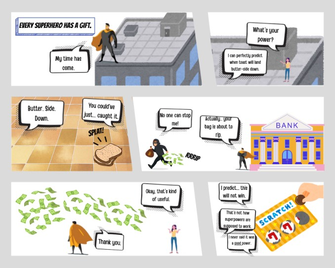
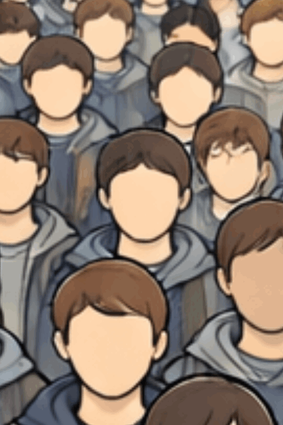

An AI-generated selfie of a girl in a blue dress with glasses and wavy hair. Generated by ChatGPT.
Make 3--Comic

A 6-panel comic strip exploring AI's humor. The super hero main character goes through various random situations in which he uses his "useless" powers. Plot generated by ChatGPT, images made with Canva.
Make 4--Gif

A gif of a large crowd of faceless people. The gif quickly zooms in on one person, with the caption "You" with an arrow, exploring a theme of blending in with the crowd. Base gif image created by ChatGPT, edits made with PhotoPea.
Make 6--Geographic Map
A visualization of how resources are collected for data centers. The map highlights where major Meta and Google data centers can be found, as well as where their most used resources are sourced from.
Make 7--Network Map
A graph representing my AI usage and how my data moves from service to service. It includes ChatGPT, Claude, Gemini, and Copilot, and shows how the data is used by their developers.